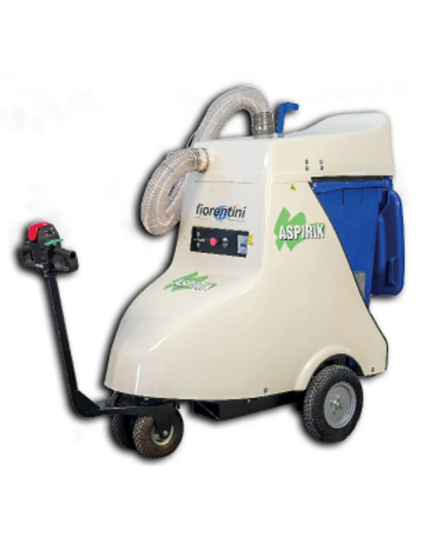
Xe quét rác
37 sản phẩm - giá liên hệ báo giá
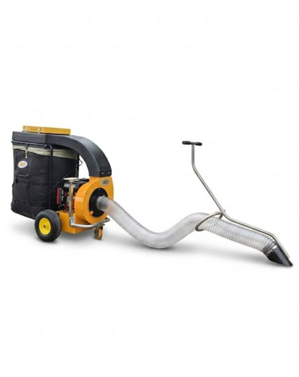
Máy hút rác lá cây đô thị BY-T2
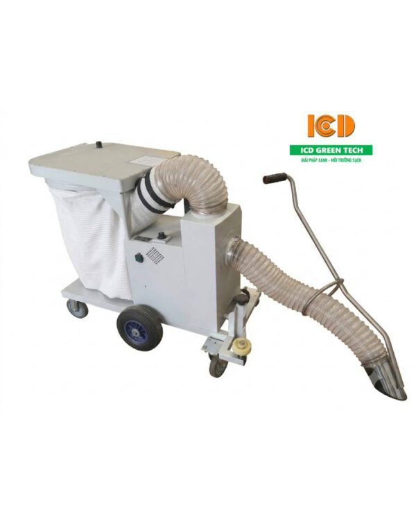
Máy hút rác lá cây Magnum A-1W
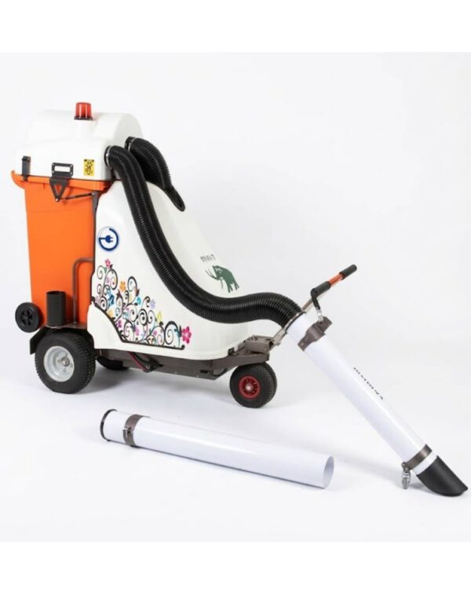
Máy hút rác MAMUT
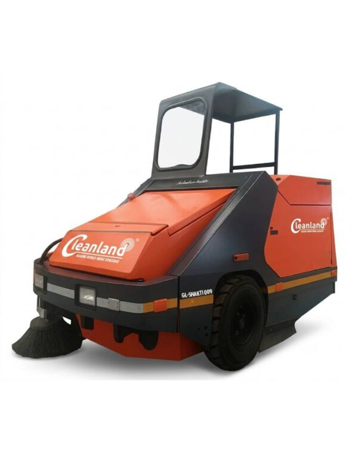
Máy quét bụi nhà xưởng GL-SHAKTI-009 Premium EV
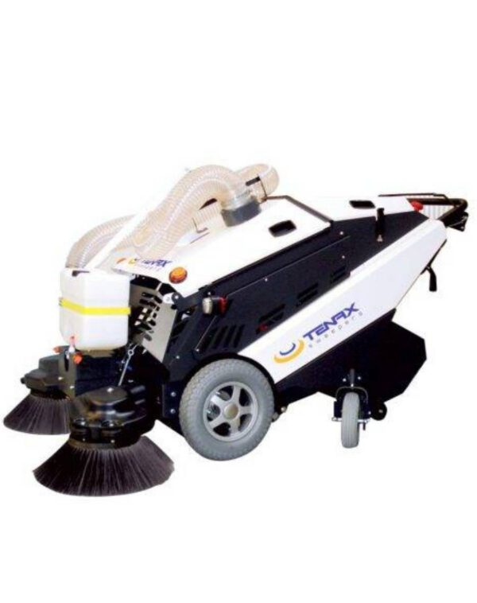
Máy quét bụi TENAX
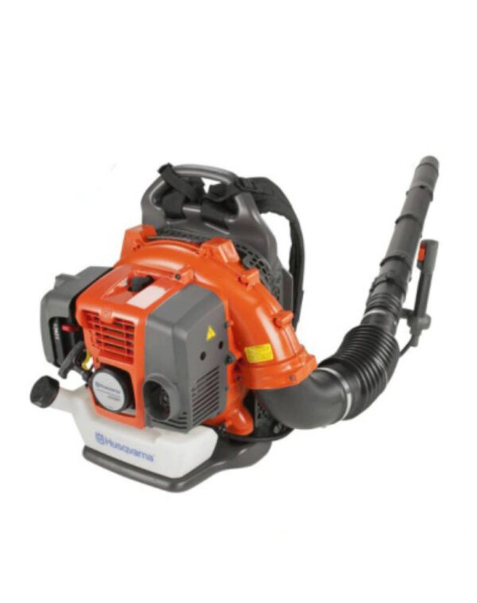
Máy thổi lá cây công suất lớn Husqvarna 570BTS
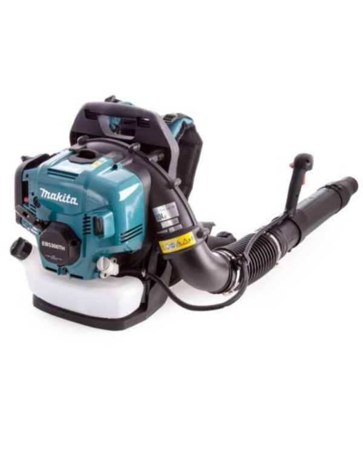
Máy thổi lá cây đeo vai chạy xăng Makita EB5300
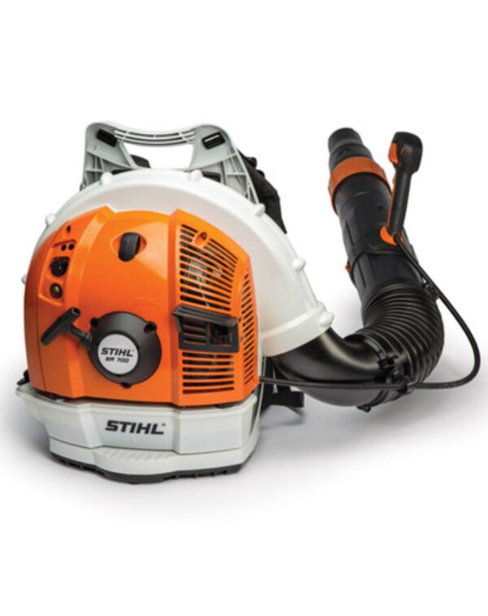
Máy thổi lá cây STIHL BR 700
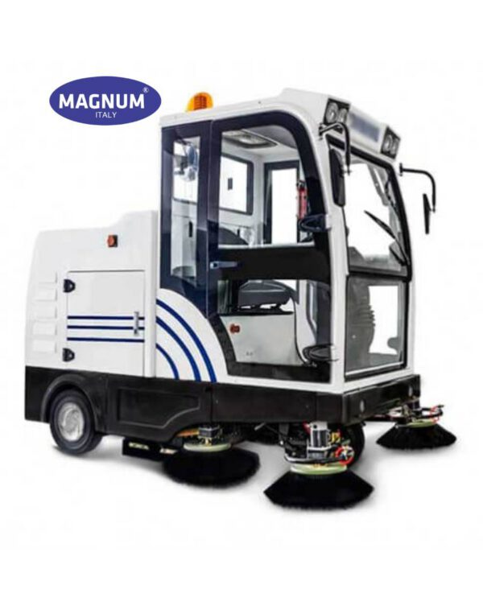
Xe quét bụi công nghiệp Magnum MN-E800LD
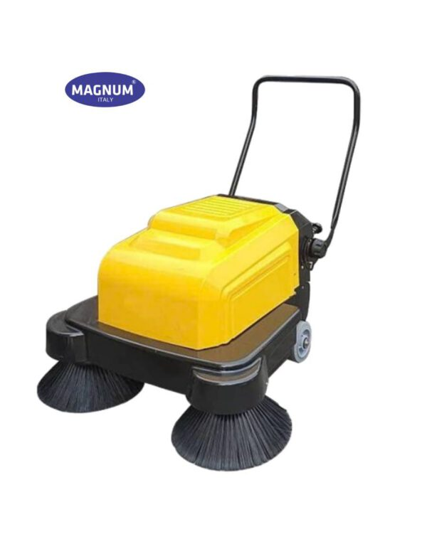
Xe quét bụi đẩy tay Magnum MN-P100AS
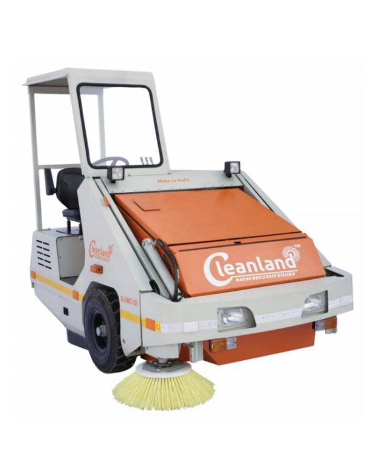
Xe quét bụi nhà xưởng GL-SHAKTI-009 champion
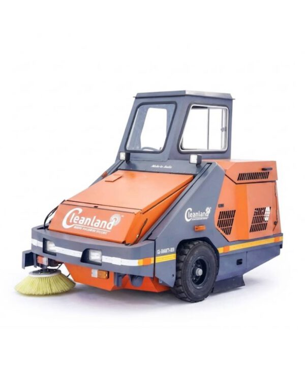
Xe quét bụi nhà xưởng GL-SHAKTI-009 Premium
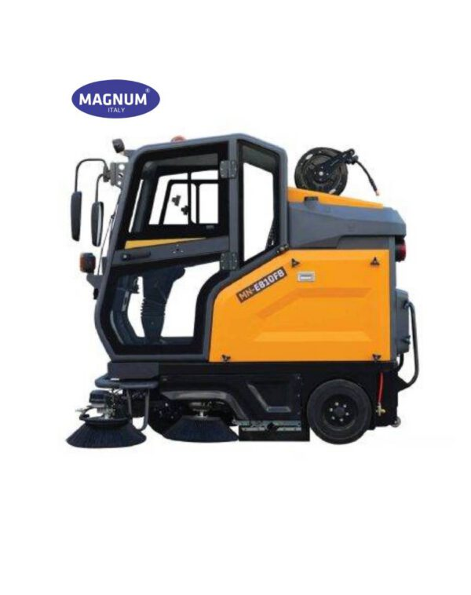
Xe quét bụi nhà xưởng Magnum E810FB

Xe quét bụi nhà xưởng magnum MN-C200
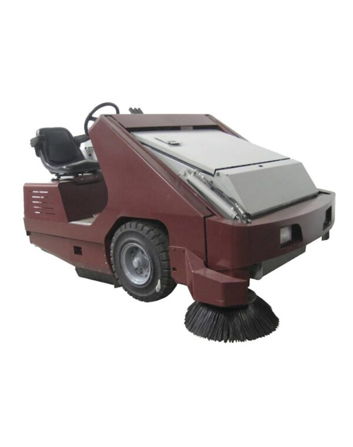
Xe quét công nghiệp chạy dầu PowerBoss Armadillo 9X Mỹ
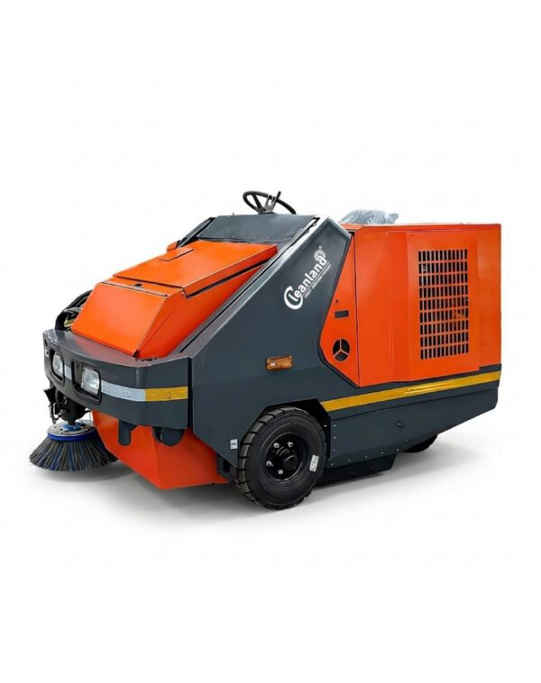
Xe quét diesel Tejas 300
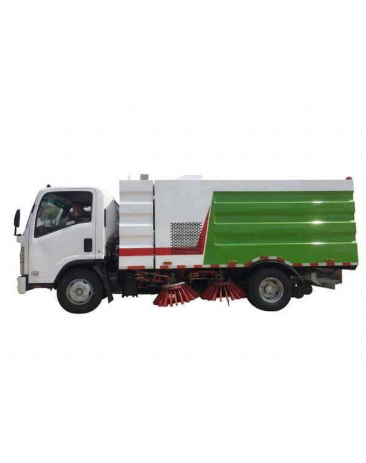
Xe quét đường 5 khối ISUZU KV600

Xe quét đường chạy điện Magnum MN-S1600
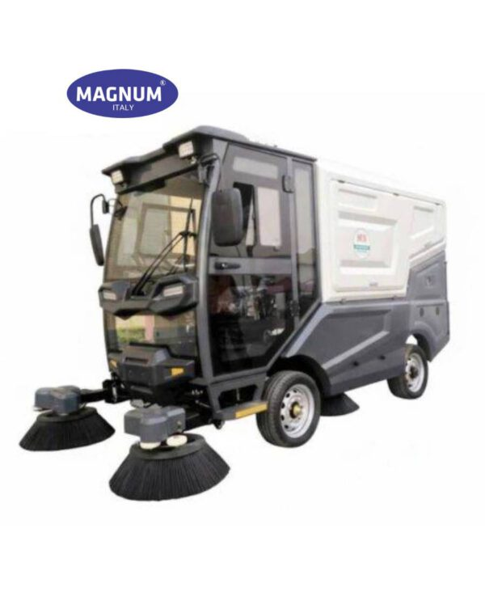
Xe quét đường đô thị Magnum MN-S1800R
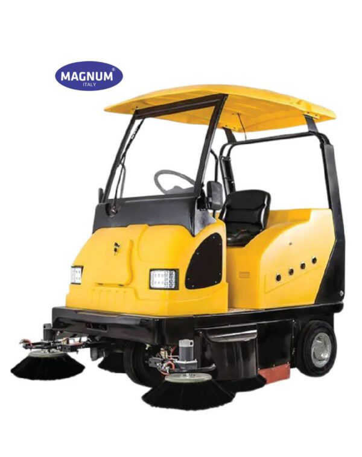
Xe quét hút bụi công nghiệp Magnum MN-E800W
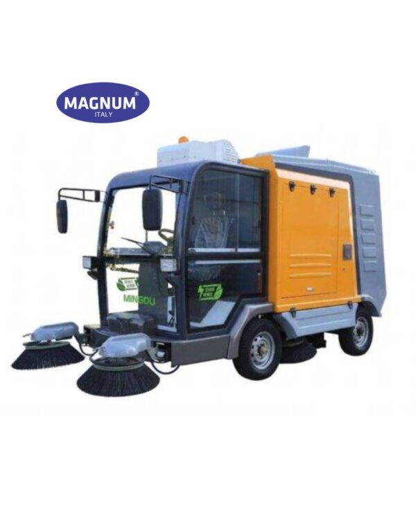
Xe quét hút bụi đô thị Magnum MN-S2000
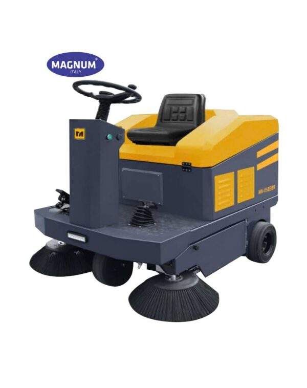
Xe quét hút bụi ngồi lái MAGNUM MN-1250
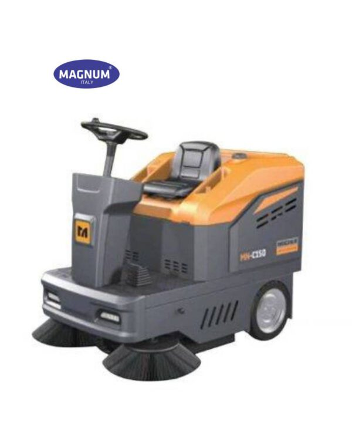
Xe quét hút bụi ngồi lái Magnum MN-C150
Xe quét rác là thiết bị vệ sinh chuyên dụng, được thiết kế nhằm thu gom rác thải, bụi bẩn nhanh chóng và hiệu quả trên nhiều loại bề mặt khác nhau như nhà xưởng, kho bãi, đường nội bộ, khu dân cư, khu công nghiệp và đô thị. Với cơ chế quét hiện đại kết hợp hút bụi, xe giúp làm sạch diện tích lớn trong thời gian ngắn, giảm phụ thuộc vào lao động thủ công.
Các dòng xe quét rác hiện nay đa dạng về kích thước, công suất và hình thức vận hành đáp ứng linh hoạt nhu cầu sử dụng từ quy mô nhỏ đến lớn.
Ưu điểm nổi bật của xe quét rác
Hiệu suất làm sạch cao: Kết hợp chổi quét và hệ thống hút bụi giúp thu gom rác, cát, bụi mịn nhanh chóng trên diện tích lớn.
Tiết kiệm thời gian & nhân công: Một xe có thể thay thế nhiều lao động thủ công, rút ngắn đáng kể thời gian vệ sinh.
Hạn chế phát tán bụi: Hệ thống hút và lọc bụi giúp môi trường sạch hơn, đặc biệt phù hợp nhà xưởng và khu vực đông người.
Đa dạng dòng máy – ứng dụng linh hoạt: Có loại đẩy tay, ngồi lái, hút bụi, chạy điện… đáp ứng nhiều quy mô và điều kiện sử dụng.
Vận hành đơn giản, an toàn: Thiết kế thân thiện, dễ điều khiển, phù hợp cả người mới vận hành.
Chi phí vận hành thấp: Tiết kiệm điện/nhiên liệu, bảo trì đơn giản, tuổi thọ thiết bị cao.
Thân thiện môi trường: Nhiều mẫu chạy điện, không khí thải, giảm tiếng ồn.
Nâng cao hình ảnh chuyên nghiệp: Giữ không gian sạch sẽ, góp phần xây dựng môi trường làm việc và đô thị văn minh.
Phân loại que quét rác
Để đáp ứng đa dạng nhu cầu vệ sinh từ quy mô nhỏ đến lớn, xe quét rác được phân loại theo nhiều tiêu chí khác nhau. Việc hiểu rõ từng loại giúp doanh nghiệp và đơn vị sử dụng lựa chọn đúng thiết bị – tối ưu chi phí – nâng cao hiệu quả làm sạch.
Phân loại theo hình thức vận hành
Xe quét rác đẩy tay: Phù hợp cho diện tích nhỏ và vừa như kho hàng, xưởng sản xuất, tầng hầm, lối đi nội bộ. Thiết kế gọn nhẹ, dễ sử dụng, chi phí đầu tư thấp.
Xe quét rác ngồi lái: Trang bị động cơ mạnh mẽ, làm sạch nhanh trên diện tích lớn như khu công nghiệp, nhà máy, đường nội bộ, khu đô thị. Giảm tối đa nhân công và thời gian vệ sinh.
Phân loại theo chức năng làm sạch
Xe quét rác cơ học: Sử dụng chổi quét để gom rác vào thùng chứa, phù hợp thu gom rác thô, lá cây, cát sỏi.
Xe quét rác hút bụi: Kết hợp chổi quét và hệ thống hút – lọc bụi, hạn chế phát tán bụi mịn. Phù hợp cả môi trường kín (nhà xưởng) và ngoài trời (đô thị).
Phân loại theo nguồn năng lượng
Xe quét rác chạy điện / ắc quy: Vận hành êm ái, không khí thải, tiết kiệm chi phí và thân thiện môi trường. Phù hợp nhà xưởng, khu dân cư, trung tâm thương mại.
Xe quét rác chạy nhiên liệu (xăng/diesel): Công suất lớn, hoạt động bền bỉ ngoài trời, phù hợp các khu vực có diện tích rất rộng và điều kiện làm việc khắc nghiệt.
Phân loại theo môi trường sử dụng
Xe quét rác nhà xưởng – công nghiệp: Chuyên xử lý bụi mịn, rác công nghiệp, đảm bảo môi trường làm việc sạch và an toàn.
Xe quét rác đô thị – công cộng: Dùng cho đường phố, vỉa hè, khu dân cư, công viên, góp phần nâng cao mỹ quan đô thị.
Phân loại theo quy mô và công suất
Dòng nhỏ – trung bình: Dùng cho kho xưởng, bãi xe, khu vực hẹp.
Dòng công suất lớn: Phục vụ khu công nghiệp, khu đô thị, sân bãi rộng.
Ứng dụng thực tế của xe quét rác
Trong thực tế, mỗi không gian làm việc và khu vực công cộng đều có những yêu cầu vệ sinh khác nhau về diện tích, loại rác thải và tần suất làm sạch. Nhờ thiết kế đa dạng về công suất, chức năng và hình thức vận hành, xe quét rác có thể đáp ứng hiệu quả nhiều môi trường sử dụng khác nhau, từ nhà xưởng sản xuất đến khu đô thị đông dân cư. Dưới đây là những ứng dụng thực tế phổ biến của xe quét rác trong đời sống và sản xuất hiện nay.
Nhà máy – nhà xưởng – kho logistics: Thu gom bụi mịn, rác công nghiệp, phế phẩm sản xuất, giúp đảm bảo môi trường làm việc sạch sẽ, an toàn.
Khu công nghiệp – khu chế xuất: Làm sạch nhanh diện tích lớn, duy trì tiêu chuẩn vệ sinh và hình ảnh chuyên nghiệp.
Đường nội bộ – khu dân cư – khu đô thị: Quét rác, lá cây, cát bụi hiệu quả, góp phần nâng cao mỹ quan đô thị.
Bãi đỗ xe – tầng hầm – trung tâm thương mại: Làm sạch sàn bê tông, epoxy, gạch đá mà không gây bụi bay ngược.
Việc lựa chọn đúng dòng xe quét rác phù hợp không chỉ giúp tối ưu hiệu quả thu gom và vận chuyển rác thải, mà còn góp phần giảm chi phí vận hành, nâng cao năng suất và xây dựng môi trường xanh – sạch – văn minh. Với đa dạng mẫu mã, tải trọng và hình thức vận hành, xe quét rác đáp ứng linh hoạt nhu cầu của nhà máy, khu công nghiệp, khu dân cư và đơn vị môi trường.
Liên hệ ngay với chúng tôi để được tư vấn chọn xe quét rác phù hợp, nhận báo giá chi tiết và hỗ trợ giao hàng – bảo hành nhanh chóng trên toàn quốc. Đội ngũ kỹ thuật sẵn sàng đồng hành cùng bạn trong mọi giải pháp vệ sinh môi trường.
Cần tư vấn chọn máy đúng nhu cầu?Kỹ thuật viên ICD báo giá trong ngày. Hotline 02422 009 188.
Nhận báo giá Cho thuê máy chà sàn công nghiệp tại Hà Nội – 02422009188
Cho thuê máy chà sàn công nghiệp tại Hà Nội – 02422009188 Tư vấn cách chọn lựa máy chà sàn nhà gia đình
Tư vấn cách chọn lựa máy chà sàn nhà gia đình Có nên mua máy hút bụi công nghiệp cho gia đình?
Có nên mua máy hút bụi công nghiệp cho gia đình?